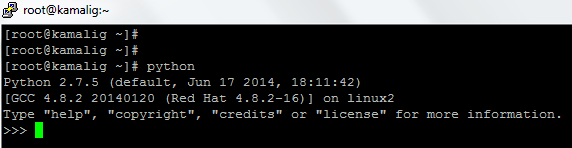
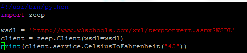
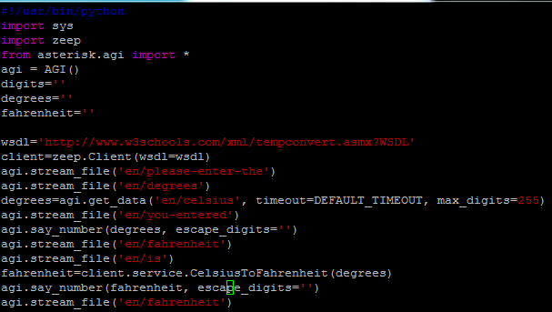

First, login to your asterisk server using putty for ssh
or if you want your windows run basic linux command. Install gitbash.
For the installer, please click the link https://git-scm.com/downloads
We need to define first the list of things we need:
1. Python .
Verify if python(lib) is installed in your system by
running command:
# python.You must be login as root.
If you were able to successfully enter the python cli (see: image below), bravo, python is already installed. Otherwise, you have to do installation on it.

Exit on python cli by
running command:
exit();
2. Zeep. Python SOAP Client
For details and installation of Zeep. Click this link
http://docs.python-zeep.org/en/master/
For guide on how to install pip. Follow this link
https://packaging.python.org/install_requirements_linux/
3. Pyst2. Set of interfaces and libraries to allow programming of Asterisk from python.
For details. See this link
https://github.com/rdegges/pyst2
The above libraries are needed in this example.
Now. Let us proceed to do the coding skills.
First. Navigate to this directory
/var/lib/asterisk/agi-bin.
by running command:#cd /var/lib/asterisk/agi-bin.
By default asterisk read all the agi under this directory so it is highly required to place all your agi
under this directory for making it sure asterisk will execute it.
Otherwise, you will have some trouble.
Now, you can use your own text editor. In this example I am using
vim.
command:#vim webservices.py.
Webservices is the filename and extension py for python.
Start of the code
For every script it must begin with the identification of the
environment where to execute or what type of execution it does.
#!/usr/bin/env python ==> beginning of code tells the machine to execute using the Python interpreter.
It tells that any version python installed is the system that is present in environment variables will be the one to used during the execution.
#!/usr/bin/python ==> This one is a hard coded, which means we are telling the system that this will be the one to used.
We can specify the directory of the python installation directory
We need a live services, this time we will be using the global example by:
w3Schools http://www.w3schools.com/xml/tempconvert.asmx?WSDL.
The first thing here is that we'will follow the idea on how to use the zeep in consuming webserivces using python.
Code:

Save and exit, inside vim editor,
press esc. command: :wq and enter.
Run the sample python script in consuming the wsdl.
command: #python webservices.agi
It must have a correct output like this one.
Now, we are heading to the agi part. Open the file
webservices.agi. Follow the below code.
Code:

We are using
zeep python client in consuming the wsdl in python.
We are using agi lib
pyst2 to make our transaction with asterisk-python easier.
And that's all.
Next, suggested link is java
hibernate webservices. Tools to used (java,hibernate,hypersql).